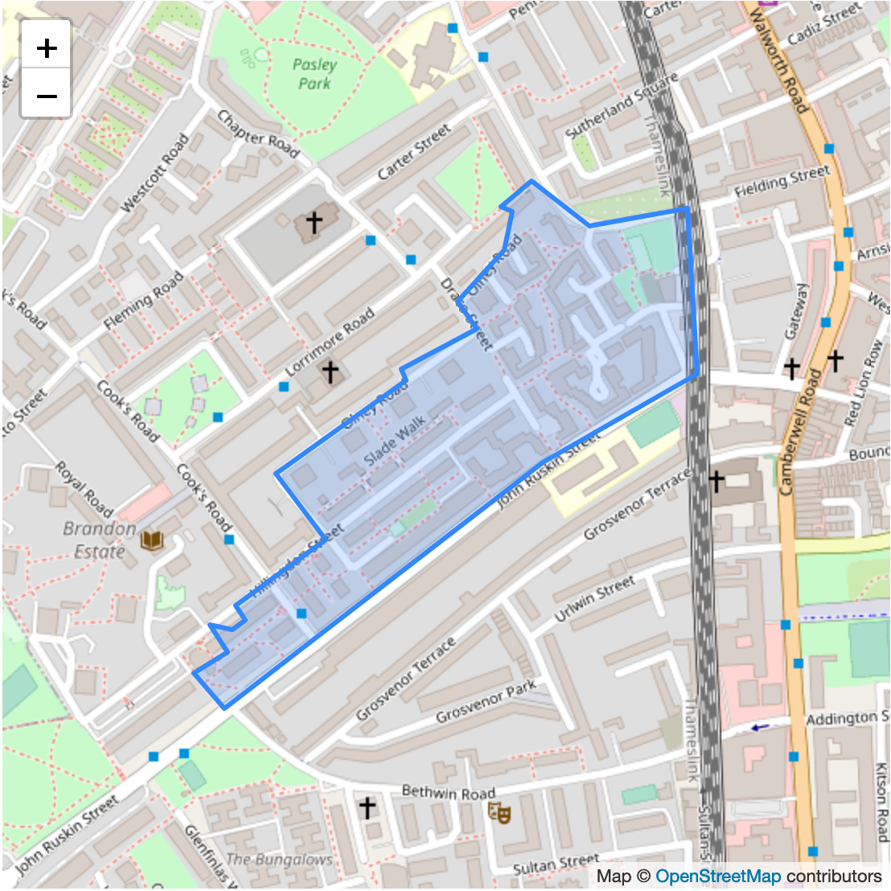

<div class="bg-gray-100 border-top py-4 py-md-5">
    <div class="container" style="max-width: 44em">

        <div class="container py-4 py-md-5">
            <h1>Your Neighbourhood: ZZ1 1ZZ</h1>
        </div>

        <div class="row g-4 py-5 row-cols-1 row-cols-lg-2">
            <div class="feature-col">
                
            </div>

            <div class="feature-col">
                <h2 class="feature-title">16</h2>

                <p>
                Neighbours have signed up so far.
                </p>

                <p>
                Six weeks to go.
                </p>

                <p>
                    <a href="#signup">Sign up now</a>
                </p>
            </div>
        </div>

        <div class="container py-4 py-md-5">
            <h2>Why Thermal imaging?</h2>

            <p>
            Thermal Imaging Surveys save on costs, as the specific area leaking can be located through thermographic inspection and thus repaired without having to disrupt the rest of the roof or replace the roof unnecessarily.
            </p>

            <ul>
                <li>Cost savings; leaks, missing or slipped insulation, electrical problems, damp zones and thermal bridging, can all be detected without having to disrupt the property.</li>
                <li>Cost savings on energy bills once the Infrared Thermographer has established and demonstrated where heat energy is escaping and where drafts are getting in.</li>
                <li>Accurate mapping through thermographic inspection, providing intelligence on the makeup of the clients property/ structure; roof, walls, ceiling, floor, basement, etc..</li>
                <li>Pre-emptive diagnostics through thermographic inspection and visual inspection; information on where things could go wrong before they do.</li>
                <li>The ability to note areas of potential concern and monitor areas of deterioration via non invasive thermographic inspection.</li>
                <!-- from https://www.buildingresponse.co.uk/thermal-imaging-surveys/thermal-imaging-benefits/ -->
            </ul>
        </div>

        <div class="container py-4 py-md-5">
            <h2>Timeline</h2>
            <ul>
                <li>Sign up for this year by September 31st (6 weeks)</li>
                <li>Thermal imaging survey day sometime between November and February</li>
                <li>Initial recomendations and quick improvements from February</li>
                <li>Your community retrofit day next Summer</li>
            </ul>
        </div>

        <div class="container py-4 py-md-5">
            <h2 id="signup">Sign me up</h2>

            <div class="mb-3">
                <label class="form-label">Name</label>
                <input class="form-control" type="text">
            </div>

            <div class="mb-3">
                <label class="form-label">Email</label>
                <input class="form-control" type="text">
            </div>

            <fieldset class="mb-3">
                <legend>Do you own or rent?</legend>

                <div class="form-check">
                    <input id="own" type="radio">
                    <label for="own">Own</label>
                </div>

                <div class="form-check">
                    <input id="rent" type="radio">
                    <label for="rent">Rent</label>
                </div>
            </fieldset>

            <a class="btn btn-primary" role="button" href="{{ '/logged_in' | relative_url }}">Sign up</a>
        </div>
</div>
</div>
